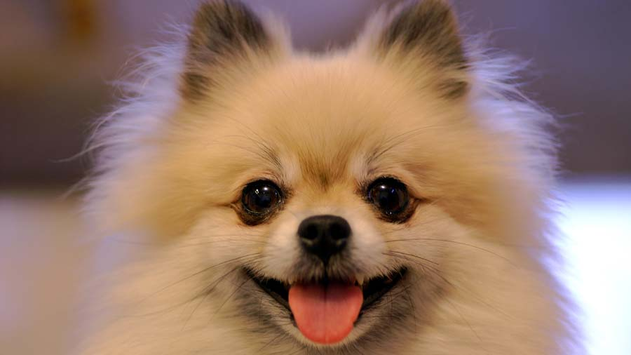
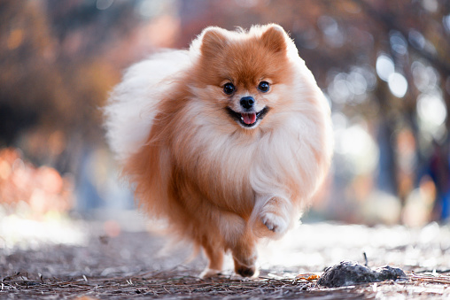
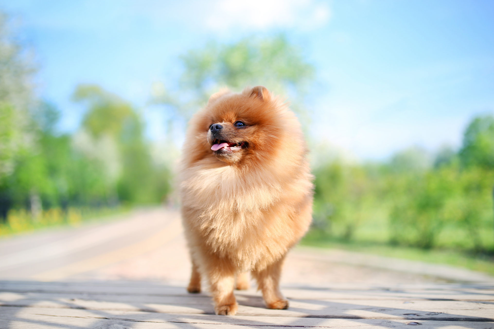
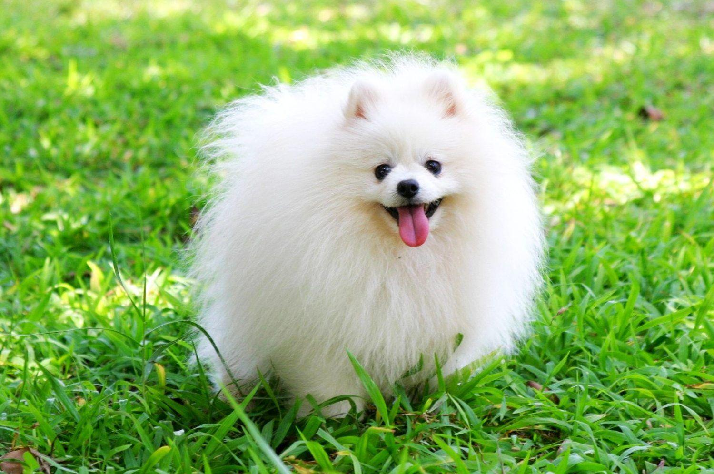

Pomeranian

origin
Germany
Poland
size
Smallest
color
Others
type
Purebred
breed group
Toy (AKC:1888)
Companion Breeds (UKC)
character
Smartest
temperament
Active
Extroverted
Intelligent
Playful
height
7-12 inches (18-30 cm)
weight
3-7 pounds (1-3 kg)
geography
Europe
overview
The Pomeranian is a small, square-proportioned, miniature spitz with a cobby, rounded body. It shares the spitz characteristics of small ears, double coat and curled tail. It has an alert, foxlike expression. Its gait is smooth and free with good reach and drive. The soft thick undercoat combined with the longer harsh outer coat, standing off from the body, combine to give the dog a unique puffy appearance. This look is further accentuated by the thick ruff and a head carriage that is naturally up-gazing.
history
The Pomeranian got its name from the region of Pomerania, which is now the area of Germany and Poland, where it was developed from the ancient Spitz breeds. The original Pomeranians were much larger, weighing up to 30 pounds, and worked as sheep herders. Marie Antoinette, Emile Zola, Mozart and Queen Victoria all owned Pomeranians.
In 1870 the Kennel Club in England first recognized them as a breed. In 1888 Queen Victoria began breeding and showing the dogs. It was she who started breeding them down in size, making the breed very popular in England. The Pomeranian was first recognized by the AKC in 1888. Some of the Pom's talents include: watchdog, agility and performing tricks. Poms make superior circus performers.
Photo Gallery


